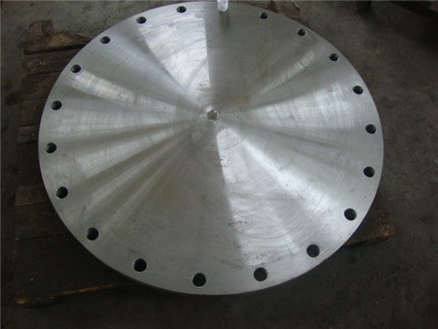
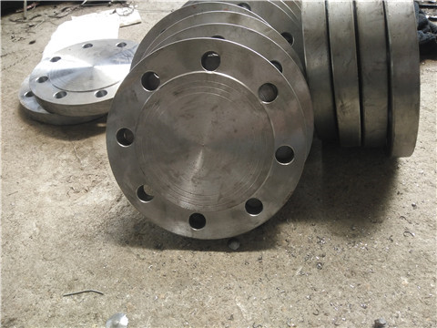
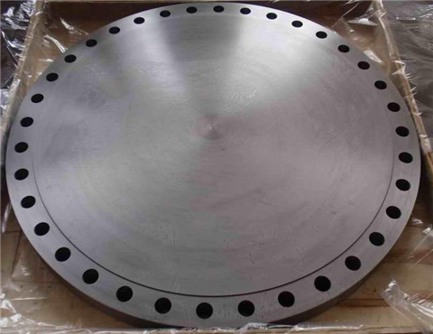

法兰盖（BL)密封面:平面(FF)、突面(RF)、凹凸面(MFM)、榫槽面(TG)、环连接面(RJ) 生产材料:碳钢、不锈钢、合金钢规格: 1/2″～80″（10-2000） 压力等级:0.6Mpa ～32Mpa、150Lb ～2500Lb、PN0.25-PN42.0 材质:20# 、304、304L、321、316、316L、310S等各种材质 常用标准: 国标：GB/T9112-2000（GB9113?1-2000～GB9123?4-2000） 美标：ANSI B16.5 Class150、300、600、900、1500（WN、SO、BL、TH、LJ、SW） 日标：JIS 5K、10K、16K、20K（PL、SO、BL、WN、TH、SW） 德标：DIN2573、2572、2631、2576、2632、2633、2543、2634、2545（PL、SO、WN、BL、TH） 化工部标准：HG5010-52～HG5028-58、HGJ44-91～HGJ65-91、HG20592-97系列、HG20615-97系列机械部标准：JB81-59～JB86-59、JB/T79-94～JB/T86-94、JB/T74-1994 压力容器标准：JB1157-82～JB1160-82、JB4700-2000～JB4707-2000 应用范围：锅炉压力容器、石油、化工、造船、治金、机械、食品等行业。法兰连接是管道施工的重要连接方式。

碳钢20601-97法兰盖厂家（Carbon Steel）:ASTM A105,20#、Q235、16Mn、 ASTM A350 LF1, LF2 CL1/CL2, LF3 CL1/CL2、ASTM A694 F42, F46, F48, F50, F52, F56, F60, F65, F70；不锈钢（Stainess Steel）: ASTM A182 F304、304L、 F316、316L、1Cr18Ni9Ti、0Cr18Ni9Ti、321、18-8；合金钢（Alloy Steel）: ASTM A182 F1、 F5a、 F9、 F11、 F12、 F22、F91、A182F12、A182F11、16MnR、Cr5Mo、12Cr1MoV、15CrMo、12Cr2Mo1、A335P22、 St45.8/Ⅲ；生产标准：HG/T20592-2009、HG/T20615-2009、GB/T9123.1-2000、GB/T9123.2-2000、GB/T9123.3-2000、GB/T9123.4-2000

碳钢20601-97法兰盖定做 法兰连接就是把两个管道、管件或器材，先各自固定在一个法兰盘上，两个法兰盘之间，加上法兰垫，用螺栓紧固在一起，完成了连接。有的管件和器材已经自带法兰盘，也是属于法兰连接。法兰分螺纹连接（丝接）法兰和焊接法兰。低压小直径有丝接法兰，高压和低压大直径都是使用焊接法兰，不同压力的法兰盘的厚度和连接螺栓直径和数量是不同的。根据压力的不同等级，法兰垫也有不同材料，从低压石棉垫、橡胶垫、高压石棉垫到金属垫都有。法兰连接使用方便，能够承受较大的压力。在工业管道中，法兰连接的使用十分广泛。